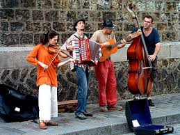
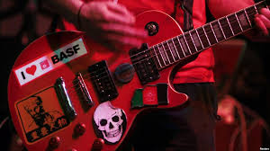

Поп
Поп-му́зика (або зневажливе попса) (англ. pop music, скорочення від popular music — популярна, загальнодоступна музика) — поняття, що охоплює різноманітні стилі, жанри та напрями масового музикування. Феномен поп-музики сформувався передусім в англомовних країнах Заходу як явище молодіжної культури

Характеристика
Інструментальні ресурси поп-музики обмежені, як правило, електрогітарами та ударними інструментами з епізодичним застосуванням саксофонів та інших, зокрема екзотичних інструментів. Для сучасної поп-музики велике значення відіграє електронна апаратура. Мелодії, як правило, нескладні, ритмічні, легко запам'ятовуються.
Вокальний стиль поп-музики характеризується мелодійною та емоційною манерою виконання, застосуванням «відкритого» звука, наближенням до мовлення співом, демонстративно «непоставленими» голосами, неприродною теситурою, з широким використанням екстатичних вигуків, стогонів, завивань та інших ефектів.
Сучасні форми поп-музики поширені в усьому світі, проте складність її оцінювання як культурного явища зумовлена неоднозначністю естетичної оцінки та соціальної ролі.
Рок
Рок-музика — узагальнена назва низки напрямків популярної музики другої половини XX століття, що походять від рок-н-ролу та ритм-енд-блюзу. Термін Rock очевидно є скороченням від Rock'n'roll і дослівно перекладається як «хитати(ся); трясти(ся)».
Рок-музика має велику кількість напрямків: від танцювального рок-н-ролу до важкого металу. Зміст пісень варіюється від легкого і невимушеного до похмурого, глибокого і філософського. Зазвичай рок-музика протиставляється поп-музиці (т. зв. «попсі»), хоча окремі напрямки балансують на межі між ними.
Основні центри розвитку рок-музики — західна Європа (особливо Скандинавія та Велика Британія) і США. Проте, хоча, як правило, з деяким запізненням, національна рок-музика з'явилася практично у всіх країнах. Українська рок-музика з'явилася за часів СРСР в кінці 1960-х років.
Термін «рок-музика» щодо конкретного колективу іноді не є чітко визначеним через комбінування та поєднання окремими виконавцями різної жанрової стилістики. При визначенні належності того чи іншого напрямку до рок-культури, користуються соціальним та музичним факторами.

Артисти
Майкл Джексон
Поп виконавиць
Майкл Джо́зеф Дже́ксон (англ. Michael Joseph Jackson; 29 августа 1958, Гэри — 25 июня 2009, Лос-Анджелес) — американский певец, автор песен, музыкальный продюсер, аранжировщик, танцор, хореограф, актёр, сценарист, филантроп, предприниматель. Самый успешный исполнитель в истории поп-музыки, известен как «Король поп-музыки», обладатель 15 премий «Грэмми»[6][7][8] и сотен других премий. 25 раз занесён в Книгу рекордов Гиннесса[9]. Количество проданных в мире записей Джексона (альбомов, синглов, сборников и т. д.) составляет 1 миллиард копий. Майкл Джексон внёс значительный вклад в развитие популярной музыки, видеоклипов, танца и моды
Кеті Пері
Поп виконавиць
Кеті Перрі народилась у Санта Барбарі як середня дитина в сім'ї двох п'ятидесятницьких пасторів.[3] Будучи підлітком, змінила своє прізвище на Перрі (дівоче прізвище її матері), оскільки «Katy Hudson» було дуже схоже на Кейт Хадсон. У неї є португальське, німецьке, ірландське та англійське коріння.
З дитинства вона слухала музику у стилі госпел та співала у церковному хорі. Кеті закінчила Dos Pueblos High School в Голета, Каліфорнія, у 2003 році та у віці 18 років переїхала до Лос-Анджелесу[8]. На музику Кеті Перрі значною мірою вплинули гурти: Queen, Аланіс Моріссетт, Heart, Джоні Мітчелл, Incubus та інші.
Muse
Рок група
Muse (вимовляється М'юз, англ. Муза) — британський рок-гурт, що заснований 1994 року в місті Тінмут, графство Девон. Гурт складається з трьох учасників: Метью Белламі (вокал, гітара, клавішні), Кріса Волстенхолма (бас-гітара, бек-вокал), Домініка Говарда (ударні, перкусія).
Загалом Muse видали сім студійних альбомів, продали понад сім мільйонів примірників своїх альбомів у всьому світі, а також стали володарями нагород MTV Europe Music Awards, Q Awards, NME Awards, Brit Awards, Kerrang! Awards, Grammy та інших, отриманих здебільшого за концертні виступи[5]. Їх остання платівка «Drones» отримала премію Греммі як «Найкращий рок-альбом»[6][7].
У 2015 році, посіли 28 місце у рейтингу «30 найбільш високооплачуваних музикантів у світі» за версією журналу Forbes, заробивши 34 млн.$, а у 2016 — піднялись до 20-го, заробивши 49 млн.$ .
Panic! at the disco
Рок група
Panic! at the Disco — американський рок-гурт з Лас Вегасу, Невада.
Музика групи є сплавом елементів поп-панку, електроніки, інді-року і танцювальної музики.[2]
Їх дебютний альбом 2005 року A Fever You Can't Sweat Out досяг № 13 позиції у чарті Billboard 200, і був проданий більш ніж мільйоном копій з часу його виходу у вересні 2005.
up
{kind=link}
{kind=link}